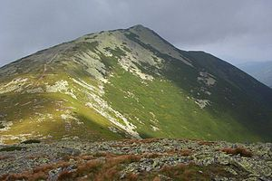
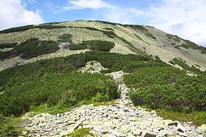
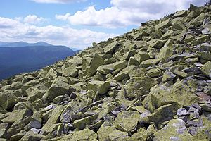
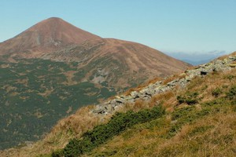

Ґро́фа — гірська вершина в Українських Карпатах, у масиві Ґорґани. Розташована в Рожнятівському районі Івано-Франківської області, в межах природоохоронної території — Ландшафтного заказника Ґрофа.
Висота гори 1748 м. Має конічну форму. Збереглись льодовикові форми рельєфу — кари, моренні вали. До висоти 1450 м. схили вкриті ялиновим лісом, вище — кам'яні осипища.
На північний захід від Ґрофи розташована гора Молода (1723 м), на південний захід — Паренки (1735 м), трохи далі й лівіше — Попадя (1740 м), на схід — Ігровець (1804), на південний схід — Велика Сивуля (1836 м). На північ від Ґрофи видніється хребет Аршиця з вершиною Ґорґан-Ілемський (1587 м).
Найближчий населений пункт — село Осмолода.
Сховати карту району
Маршрут #2 г.Сивуля

Вели́ка Сиву́ля — гора в Українських Карпатах. Одна з вершин однойменного хребта, найвища гора масиву Ґорґан. Розташована в Івано-Франківській області на вододілі верхів'їв річок Лімниці та Бистриці Солотвинської.Назва вершини вказує на колір гори, вкритої камінням, посивілим від лишайників. За легендою, назва гори пішла від того, що тут знайшли посивілу від страху й неволі дівчину-королівну незвичайної вроди, яку схопили татарські ординці і довго тримали у неволі високо в горах і яка, завдяки гарячим молитвам до Бога, зуміла вирватися з лабет смерті й вижити на схилах Сивулі.
Сховати карту району
Маршрут #3 г.Яйко-Ілемське

Я́йко-Іле́мське — гірська вершина в межах Долинського району Івано-Франківської області, на південний схід від села Мислівки. Розташована в західних Ґорґанах (Українські Карпати), на хребті, що тягнеться від річки Свічі до річки Молода, і включає ще, крім Яйка-Ілемського, такі вершини: Великий та Малий Лисаки, Поганець, Укерня, Сиваня Лолинська, Молода, Яйко-Перегінське. Є другою вершиною за висотою в даному пасмі. Висота 1680 м (за іншими даними — 1685 м). Назву гора отримала за характерну форму, що нагадує яйце.
З вершини відкривається чудова панорама — на півночі видно весь хребет Аршиці (з найближчою його вершиною — Ґорґаном Ілемським). Далі на схід видно гострий пік Високої та плаский Ігровець, а також далеку Сивулю. У південно-східному напрямку домінує вершина Молодої, від якої тягнеться до Яйка-Ілемського хребет з вершинами Поганець, Укерня, Сиваня Лолинська. Зліва від Молодої помітна Ґрофа. У південному напрямку видно Негровець, а на захід — безліч нижчих заліснених хребтів у долині річки Свіча, серед яких виділяється Менчил. У перспективі північно-західного відрогу Яйка-Ілемського низько в долині проглядаються будівлі села Мислівки, а над ними височить хребет Хом.
Сховати карту району
Маршрут #12 г.Горган-Ілемський

Гіррська вершина в Українських Карпатах, у масиві Ґорґани, на хребті Аршиця. Розташована на межі Долинського та Рожнятівського районів Івано-Франківської області. Висота 1587 м. Вершина асиметрична, конусоподібна, з крутими (25—40°) схилами. Поширені кам'яні осипища, «кам'яні ріки». Вершина безліса, складається з пісковиків. На схилах — хвойні ліси (ялина, сосна). На схилі гори розташоване заповідне урочище — Урочище Аршиця. На північний захід від Ґорґану-Ілемського розташована гора Великий Пустошак (1423 м), на північний схід — хребет Сихлос (Сехліс), на південь — гора Яйко-Ілемське (1600 м), на захід — долина річки Свічі з її притокою Правич.Найближчий населений пункт — село Мислівка.
Сховати карту району
Маршрут #13 г.Петрос - г.Говерла

Гове́рла (рум. Hovârla, угор. Hoverla, давня назва угор. Hóvár) — найвища вершина Українських Карпат і найвища точка України, висота 2061 м. Назва походить із румунської howirla, що означає «важкопрохідне підняття»[1], або з угорської Hóvár, що означає «снігова вершина»[джерело не вказане 469 днів]. Розміщена в гірському масиві Чорногора, на межі Яремчанської міської ради Івано-Франківської області та Рахівського району Закарпатської області за 17 кілометрів від кордону з Румунією.
Пе́трос — гора в Українських Карпатах, у Рахівському районі Закарпатської області. Одна з найвищих вершин гірського масиву Чорногора. Висота — 2020 м. Розташована у північно-західній частині масиву між горами Шешул (на південному заході) і Говерла (на сході).